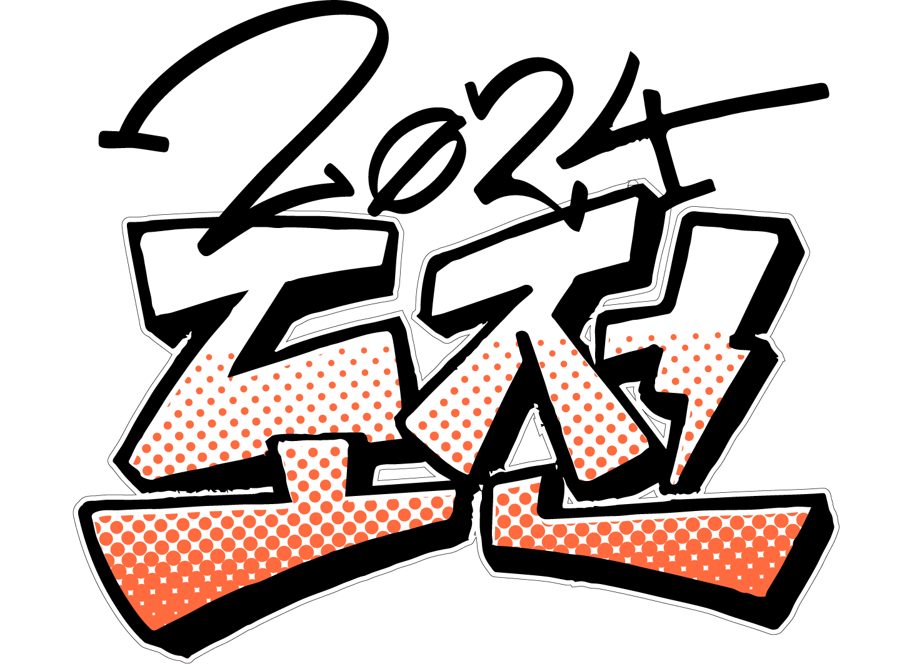

10. 도전

도전
2024
나, 다짐
나, 다짐
해설
애매하게 고학년이 되었습니다. 아는 게 많아질수록 매사에 머뭇거리게 됩니다. 지금 하고 있는 일이 시간 낭비일지도 모른다는 걱정이 들고, 결과가 나와야만 의미 있다고 생각하게 되고. 새로운 시작을 어려워하고, 같은 노래만 듣는 사람이 되고 말 거예요.
그래서 2024년, 제가 정한 ‘올해의 단어’는 ‘도전’입니다. 요즘은 새로운 것들에 많이 도전해 보고 있어요. 사소하게는 친구의 문화생활을 함께한다든가, 못하고 싫어한다고 생각했던 영역을 배워 본다든가. 망설여질 때마다 마음속으로 ‘도전!’이라고 외치면, 왠지 용기가 생기곤 합니다.
내가 나에게 건네는 말이야말로 가슴 속에 가장 강하게 우뚝 선 표지판인 것 같습니다. 여러분은 지금 무엇을 보고, 무엇을 듣고 계신가요? 여러분에게 말을 거는 목소리는 무엇인가요?
그래서 2024년, 제가 정한 ‘올해의 단어’는 ‘도전’입니다. 요즘은 새로운 것들에 많이 도전해 보고 있어요. 사소하게는 친구의 문화생활을 함께한다든가, 못하고 싫어한다고 생각했던 영역을 배워 본다든가. 망설여질 때마다 마음속으로 ‘도전!’이라고 외치면, 왠지 용기가 생기곤 합니다.
내가 나에게 건네는 말이야말로 가슴 속에 가장 강하게 우뚝 선 표지판인 것 같습니다. 여러분은 지금 무엇을 보고, 무엇을 듣고 계신가요? 여러분에게 말을 거는 목소리는 무엇인가요?